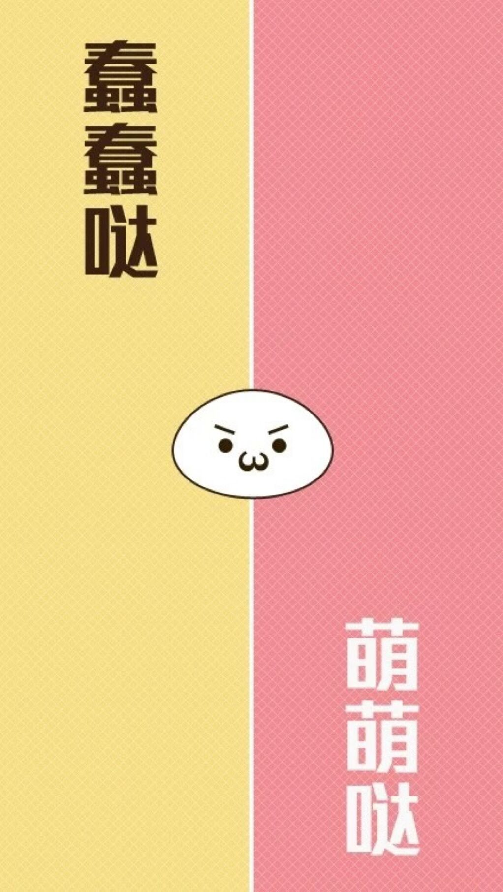
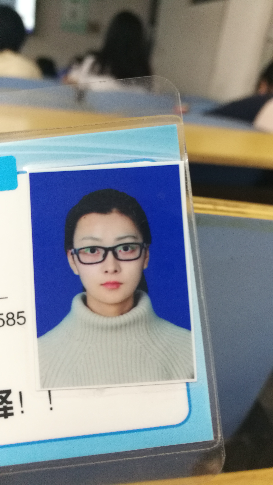
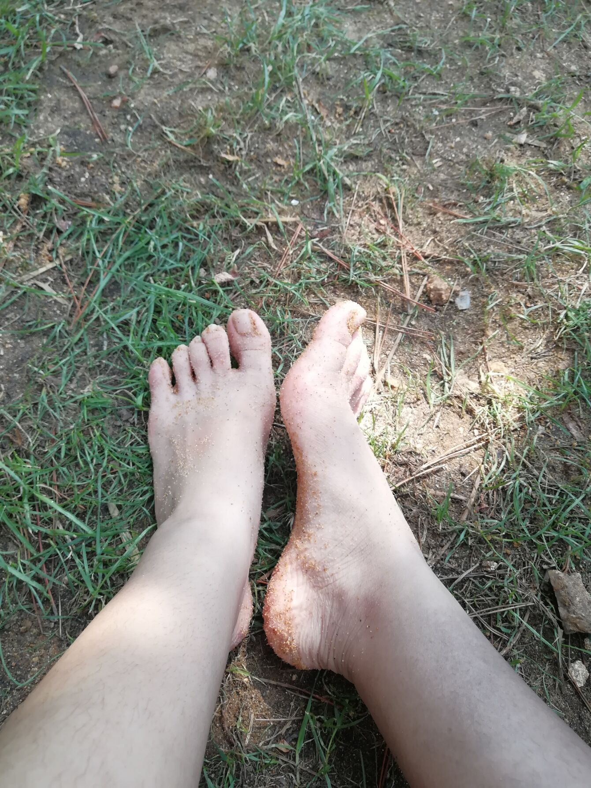

《我和小仙女的羁绊》
- 当你老了，白发苍苍，睡意朦胧
- 在炉前打盹，请取下这本诗篇
- 慢慢吟咏，梦见你当年的双眼
- 那柔美的光芒与青幽的晕影
- 多少人真情假意，爱过你的美丽
- 爱过你欢乐而迷人的青春，
- 唯独一人爱过你朝圣者的心
- 爱你日益凋谢的脸上的哀戚
- 当你佝偻着，在灼热的炉栅边
- 你将轻轻诉说，带着一丝伤感
- 逝去的爱，如今已步上高山
- 在密密星群里埋藏着它的赧颜
- 这是叶芝先生写给茅德冈女士的《当你老了》
- 比之幸运的是，我在人海中牢牢地抓住了你
- 我们的感情我希望是细水长流
- 用长情的陪伴换来缓缓而至的彼此
- 你的世界
- 哪怕我花再长的时间去抵达
- 我走的每一步也都会倾尽全力
- 让彼此的感情岁月温润而美好
- 亲爱的，对的人就要跑着去接近
- 因为你，我心里的温暖就再也不会分给别人
- 让我们相濡以沫，慢慢成长，老去
- 当你老去，当我老去，那时的星星依旧绚烂
亲爱的，我们来回忆一下我们的故事吧
FIRST
其实在我们一起吃螺蛳粉之前，我对你一点印象都没有，当时刚刚结组之后，我们组里我只知道有黄远龙，其余人我都没有看脸......所以也不知道我的小仙女就在我的身边。
这是我们一起去吃螺蛳粉，当时集合的时候我就被你吸引了，没错，你的魅力就是这么大。那种突然之间的感觉，我明白那是心动了，我意识到你就是我梦想的那个人，遇到你真的是我的幸运。
你应该没有注意到，吃饭的时候你的一举一动我都看在眼里，你文静，高冷，优雅的魅力首先将我吸引。我一直都在猜测你的名字，根据各种迹象我觉得你是叫刘丹青。后来，知道你真的叫刘丹青，好高兴，很喜欢你的名字。
一缕桃红，是我心底里活色生香的往事，即使这么长时间过去了，只要一想起，依然会怦然心动。
SECOND
那天，我们一起去远足，我在最前方，你在最后方。
拍照的时候你也是自己去拍了些你喜欢的场景，并不喜欢拍自己，让我更加被你吸引。我真的很想去接近你，但是面对美丽又有些脱俗的你，我真的是没有勇气，自卑让我停止了脚步。
当一起吃饭的时候，我发现你坐在我的对面的时候，我的内心是很矛盾的，又兴奋，又紧张。当你主动和我说话的时候，我真的兴奋到爆炸你知道吗？真的！就觉得好幸福。当我们慢慢交谈之后，我的感受是：和一个多年未见的老友交谈，那种默契，让人心醉。
回学校之后，我用了一天时间来下定决心，来把握住这次心动，要一直陪着你。
你知道看这个图片我高兴了多久吗，我认为你是一直注意着我的，我很兴奋。
一抹黛色，与君初相识，犹如故人归。
THIRD
清明的时候，我去了泰山。开始，我也不知道哪里来的冲动，我一直想的就是把我的行程告诉你，让你不要担心，虽然也不知道哪里来的名分让我这么做......
爬山的时候我一直和你聊天，你也愿意一直这么陪我聊下去，我真的很开心，也很有力气爬下去。也不知道我们怎么会有这么多的话要说，我只是想要一直和你说下去，并且想像我带着你去旅行的场景，真的很美好。
当我真的爬到顶峰的时候，说真的我当时差点就打电话向你表白了，在我快要登顶的时候，我向你打过一通电话，但是听到你的声音，我却又把到嘴边的话憋了回去。亲爱的，我当时想的是，我想和你一起见识这个世界上的许多美好的景色，就是我们，一起。
我有些自卑，我想要一直陪着你但是又害怕表白然后失去你。那之后，我就想等着你，一直陪伴着你，因为我是爱你的，是克制，是付出，是不求回报的。
天青色，是我愿意用千百次的等待，换取哪怕只有一次回眸的颜色。
FORTH
后来的后来，我们发生过误会，你也生过我的气，幸运的是你都谅解了，抱抱你。
然后，我们的关系应该叫做暧昧吧？我们一起去上名义上的自习，一起去吃饭，一起散步跑步......在你说要给我换一个聊天背景的时候，我第一反应就是，我应该不是在做梦吧！然后就是这个图片咯，我又将它改了一下，我也用它，因为我对于你来说就是蠢蠢哒，你就是我萌萌哒的小仙女。
我们5.20那天一起去的科大，我们一起吃了个在我看来很暧昧的晚饭，真的是我超级幸福的一天，特让我心动的就是你在QQ里的那句我想去找你了，真的在我这里我很兴奋！
月光白吧就，是我心底里那抹看得见摸得着的白月光。
FIFTH—ONE
emmmm,首先亲爱的，我应该先向你道歉，对不起，让你受委屈了。不管我当时的想法是什么吧，反正因为我的原因我让我的小仙女哭了，那就是我的错。
但是幸运的是我抓住了这个机会，没有因为我的原因让我错失一段这么美好的感情。没有轻言放弃，是我这么多年来做的最幸运的事。“宜言饮酒，与子偕老。琴瑟在御，莫不静好。”
竹青色，是我家青青的颜色，君子之风，不和我计较。
FIFTH—TWO
终于到了爱情修成正果的时候了！6.7号我们第一次在操场看台上一起吃的饭，当时你和我说，你觉得6.6是个好日子，可惜错过了！当时我真的是欣喜若狂，外加一点愣住，因为我以为我又错过了一次机会......
emmmmm,放这个图片的原因是，我的一部分同学要我爆照，我很不情愿（不想让我家小仙女的照片让别人看，）的给的这个，比较有纪念意义......
说过的话我还是想说，生活中哪会有这么多恰好和默契，但是又偏偏让我们遇到了，缘分注定让我们在一起，那我们就要把握住这个缘，并将它延续下去。小仙女，我爱你，对的人，就是要跑着去接近。
终于完全可以用金黄色了，使我们爱情收获的颜色
这是我们的情侣头像，多好，很爱你小仙女，我们也一定会像这样一直互相揪着不放手，一辈子。
这是我最开心的一晚，也是我最难过的一晚。我们刚在一起不久就面临着暑假的折磨，我可以想象得到我的暑假会是有多么的想你，后来果然印证了我的想法。
我经常会想起那晚上我们在一起的种种场面，我多么想让时光倒流到那个晚上，然后让它慢一些，再慢一些。
你开心，就是我最大的开心，我很爱你。
SIXTH
宝贝，我想你，我好想你，我真的超级想你QAQ。这个暑假我们虽然有聊天，电话，照片还有视频，但是还是填补不了心中的空白，我想你QAQ
"相思在心头燃烧成灰烬，化为相思灰，风一吹，满天满地都是相思，挥不去，散不去。"这句话说得真好。
相思灰，相思成灰，也不改痴心。
emmmmm,亲爱的，这是你出去玩给我的照片，虽然少，但是我还是很开心，因为我可以见到小仙女的照片，并且可以让我想像我陪在你身边的场景。我期待着将来我们两个一起去旅行的甜蜜，我说过，我想和你一起见识这个世界上的许多美好的景色，就是我们，一起。
THE END
在我遇到你之前，我根本不相信什么缘分，天意什么的，遇到你之后，我相信了。我相信你就是我命中对的那个人，我也相信我会是你注定的那个人，我爱你。和你谈恋爱的感觉真好，原来这个世上，真有一个人会让我的心软下来，然后开一朵花。你的笑，早在某一个瞬间成了我一整天的开心，你的一举一动，决定我所有的悲欢喜忧。在这个世界上我遇到了美好的你，所以我实在忍不住想要陪你到老。
亲爱的，虽然我们的第一个七夕不能在一起过，但是，你在哪里，我的心就在哪里。我们先攒着，等见到你我一定会好好补偿你，连同我们的相思，现在我只好先一起回忆我们的故事，并把它写给你，希望你记得我们之间的故事，希望你能够喜欢[抱抱]